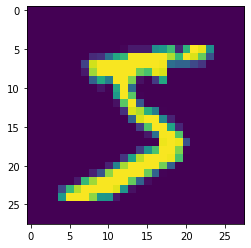
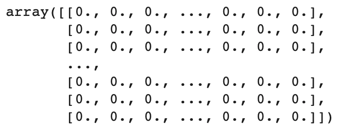
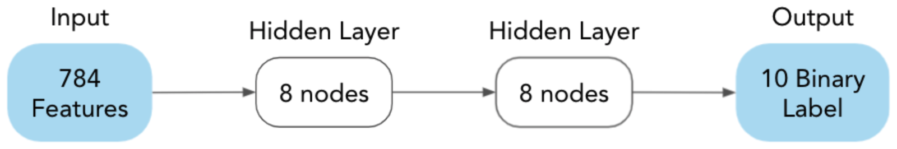
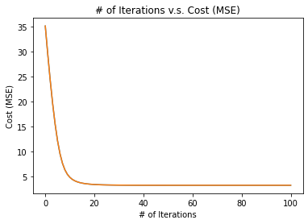
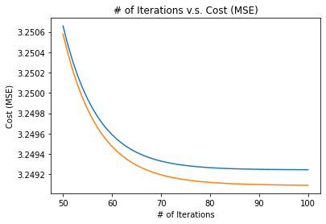
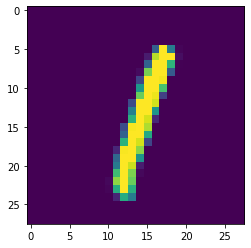

Introduction to Deep Learning · Hands On Implementations · Chapter 13
Implementing a Neural Network
In this chapter
We will perform a similar workflow as the last two sections here for a Neural Network implementation.
13.1Importing Libraries
Before we start, let’s import some necessary libraries we will be using.
import numpy as np # NumPy
import pandas as pd # Pandas
import matplotlib.pyplot as plt # Matplotlib
from IPython.display import display # For displaying the Pandas DataFrame
import math # Math library
from tensorflow.keras.datasets import mnist # For loading the data set
from sklearn.model_selection import train_test_split # For splitting the data set into train and test sets
from sklearn.preprocessing import OneHotEncoder # To one-hot encode the y-values13.2Import Data set from Tensorflow
We will be using a data set on hand-written digits. In this data set, we are given some information about the pixel values of a picture with a numerical digit and the corresponding number.
In this notebook, we will use Neural Networks to predict what number a hand-written digit is.
In the following code box, we import the data from Tensorflow.
one_hot = OneHotEncoder(sparse=False)
(x_train, y_train), (x_test, y_test) = mnist.load_data()
x_train = x_train.reshape(x_train.shape[0], -1).T
x_test = x_test.reshape(x_test.shape[0], -1).T
y_train = y_train.reshape(-1,1)
y_train = one_hot.fit_transform(y_train).T
y_test = y_test.reshape(-1,1)
y_test = one_hot.transform(y_test).TDownloading data from https://storage.googleapis.com/tensorflow/tf-keras-datasets/mnist.npz 11493376/11490434 [==============================] - 0s 0us/step
13.2.1Quick-Look
In the following code box, we take a quick look at one of the images.
image_num = 0 # Change this number to see different image examples
image = x_train[:,image_num]
label = one_hot.inverse_transform(y_train[:,image_num].reshape(1,-1))[0][0]
print("Label: " + str(label))
plt.imshow(image.reshape(28,28))
plt.show()Label: 5

13.3Data set Features
Here is some information about the features and labels of our data set.
X-Values (Features)
784 grayscale pixel values (0 to 255) (There are 784 pixels in total for each image because the image dimensions are .)
Y-Value (Label)
Label: The digit that the image is supposed to represent.
We will be turning each y-value into a one hot encoding, so the number “5” as a label would be represented by the vector where we place the 1 in the 5th position (index starts at 0).
m_train = x_train.shape[1]
m_test = x_test.shape[1]
print("Number of examples in train set: " + str(m_train))
print("Number of examples in test set:\t " + str(m_test))Number of examples in train set: 60000 Number of examples in test set: 10000
m = m_train + m_test
n = x_train.shape[0]
print("Number of examples: " + str(m))
print("Number of features: " + str(n))Number of examples: 70000 Number of features: 784
13.4Data set Shape
In the last two code boxes, we found that our data set has 70,000 examples, 60,000 of which are in the train set and 10,000 of which are in the test set. Additionally, as we said before, both the train set and the test set have 784 features (pixel values). This kind of familiarity with the data set is always nice to know before creating the Deep Learning model.
13.5Normalization
For Linear Regression, we must **normalize** our values. In this case, that means bringing the mean to 0 and the standard deviation to 1 using the following code box. Note that we only do this for the X-Values (Features).
# x_train_np
x_train = x_train/255
# x_test_np
x_test = x_test/255
x_train
13.6Gradient Descent
Now we will move onto the Neural Network model. For Neural Networks, we use Gradient Descent. These are the steps of Gradient Descent (the parameter initialization is specific to Neural Networks, but most of these steps are applied to (mostly) all types of Machine Learning and Deep Learning algorithms):
Initialize Parameters For Neural Networks, we initialize all parameters except for the bias parameters at random. We initialize the bias parameters to be 0.
Hypothesis Function Use the paramters and input features to compute the hypothesis .
Cost Function Use the prediction and the real label to compute the Binary Cross Entropy (Cross Entropy) cost function.
Parameter Update Compute the parameter update for all parameters and update them using the appropriate learning rate (alpha).
Repeat! Repeat Steps 2-4 many times until the cost is sufficiently low.
In the following code boxes, we will write code for each of these steps. In the end, we will put these together to train the Neural Network model.
13.6.1Neural Network Architecture
The following image shows the architecture of the Neural Network we will be implementing. However, we want to create code so that we can easily change the architecture. So, you will see that all of the methods we will be implementing will be generalized.

13.6.2Initialize Parameters
A Neural Network has different parameters at each layer. How do we initialize the parameters for all layers?
First, we start by creating a function to initialize the parameters for one layer.
The parameters for one layer will be stored in a matrix of shape , where is the number of units in the next layer and is the number of units in the previous layer. (Remember, these parameters will be initialized at random.)
The bias parameters will be stored in an array of zeros with shape .
def initialize_parameters_one_layer(n_x, n_y):
W = np.random.rand(n_y, n_x)
b = np.zeros((n_y,1))
return W, b# Let's test it out!
W_temp, b_temp = initialize_parameters_one_layer(8,8)
print(W_temp)
print("\n\n")
print(b_temp)[[0.9948882 0.31061237 0.59983966 0.0903806 0.39713194 0.74456186 0.74524955 0.61054516] [0.40787876 0.7472519 0.21508359 0.70613346 0.09833612 0.77623298 0.84916848 0.93004424] [0.37349405 0.9830624 0.56006727 0.63066102 0.58694321 0.19604183 0.02724027 0.76783474] [0.64280007 0.76425092 0.09191286 0.79202201 0.46478162 0.6500469 0.81145321 0.38500157] [0.46835228 0.70215198 0.28147696 0.77359609 0.60774462 0.75848635 0.7629576 0.5458516 ] [0.48069041 0.36528199 0.16404106 0.213355 0.93370239 0.57034688 0.68039659 0.46567365] [0.11422886 0.19365046 0.65993693 0.99365807 0.49854135 0.14871664 0.89138876 0.21796542] [0.36232873 0.86834132 0.73126737 0.42163397 0.19175555 0.12868344 0.3792012 0.1771464 ]] [[0.] [0.] [0.] [0.] [0.] [0.] [0.] [0.]]
Then, we create all of the parameters for all of the layers. To do this, we have to know the architecture of the network, so we pass that as an argument.
This argument will be a list like (which is the network structure we will be using).
We will store the final parameters in a dictionary called “parameters,” which we will return at the end of the function.
def initialize_parameters(layer_dims):
parameters = {}
for i in range(len(layer_dims)-1):
parameters["W" + str(i + 1)], parameters["b" + str(i + 1)] = initialize_parameters_one_layer(layer_dims[i], layer_dims[i+1])
return parameters# Let's test it out!
initialize_parameters([1,8,8,1]){'W1': array([[0.50403375],
[0.2482813 ],
[0.4401925 ],
[0.80938932],
[0.17882748],
[0.61901345],
[0.1650366 ],
[0.18466573]]),
'W2': array([[0.31584434, 0.66085578, 0.32536029, 0.07630073, 0.26280106,
0.18086192, 0.80576887, 0.55052303],
[0.8421674 , 0.67539196, 0.55940613, 0.46603706, 0.24337491,
0.96732574, 0.05994815, 0.96613542],
[0.81486762, 0.5078549 , 0.32228502, 0.80395045, 0.80621855,
0.42159382, 0.7995287 , 0.76764003],
[0.12166132, 0.69217668, 0.74841264, 0.41248084, 0.9953898 ,
0.77604088, 0.78442132, 0.43921354],
[0.62223419, 0.10602683, 0.72589688, 0.22725062, 0.20834198,
0.14922117, 0.9117977 , 0.18231461],
[0.46405014, 0.83205318, 0.52006071, 0.36658749, 0.06654238,
0.04215887, 0.38908826, 0.57961021],
[0.14434125, 0.12783952, 0.66082712, 0.45476599, 0.59337462,
0.22681795, 0.63748266, 0.15836681],
[0.22914379, 0.98708748, 0.30427091, 0.01945012, 0.54740481,
0.41804085, 0.99274595, 0.68454313]]),
'W3': array([[0.35134235, 0.36249248, 0.95158612, 0.56110301, 0.76751867,
0.81790674, 0.25298197, 0.91874051]]),
'b1': array([[0.],
[0.],
[0.],
[0.],
[0.],
[0.],
[0.],
[0.]]),
'b2': array([[0.],
[0.],
[0.],
[0.],
[0.],
[0.],
[0.],
[0.]]),
'b3': array([[0.]])}13.6.3Hypothesis Function
Now, we implement the hypothesis function for Neural Networks. Just like for the parameter initialization, we cannot make our code specific to our neural network architecture.
So how do we compute the hypothesis?
We take a similar approach as in the parameter initialization. We first compute the activation units of the next layer given the activation units of the previous layer.
Then, we create another function which repeats this process many times to compute the final hypothesis given the original inputs.
(Before we do this, we define the sigmoid function.)
Here is the sigmoid function:
def sigmoid(x):
return 1/(1+math.e**(-x))Now, we compute the activation units of the next layer given the activation units of the last layer.
Shape of input:
Shape of parameter (not bias parameter):
We want the shape: .
Therefore, we do:
Finally, we take the sigmoid of this answer.
We also return the value before we take the sigmoid for backpropagation.
def hypothesis_one_layer(layer_num, input, parameters):
W = parameters["W" + str(layer_num)]
b = parameters["b" + str(layer_num)]
z = np.dot(W, input) + b
y_hat = sigmoid(z)
return y_hat, zTo find the hypothesis, we repeat the last function a lot of times according to the layer dimensions. We have to also remember to store some of the values in a “cache” for when we do backpropagation.
def hypothesis(layer_dims, x, parameters):
cache = {}
y_hat = x
for i in range(len(layer_dims)-1):
y_hat, cache["Z"+str(i+1)] = hypothesis_one_layer(i+1, y_hat, parameters)
cache["A"+str(i+1)] = y_hat
return y_hat, cache13.6.4Cost Function
Now, we define the cost function using and . Remember, when and are matrices, the cost function is defined as follows: where ”” and the squaring operation represent element-wise subtraction and squaring. Note that “log” is the natural log function with base . In Python code, this would be:
J = - 1/(m) * (y*np.log(y_hat) + (1-y)*np.log(1-y_hat))(Sidenote: For the Python function, instead of passing in , , and , we will simply pass in (which we computed in the last step). Additionally, we will pass in and .)
In the next code box, we create the cost function.
(Note: The cost function for Neural Networks is the same as the Logistic Regression cost function in this case.)
def cost(y_hat, y, m):
J = - 1/m * np.sum(y*np.log(y_hat) + (1-y)*np.log(1-y_hat))
return J13.6.5Parameter Update
After computing the cost, we have to adjust our parameters. Recall that the parameter update for is: Similarly, this is how we update : To find and , we again find this in pieces. Because we did not learn Calculus, do not worry about how we find these values. Just note how we use them to update the Neural Network weights.
(Implementational Detail: We store all of the gradients (parameter updates) in a dictionary called “grads” in the parameter update function.)
def parameter_update_one_layer(dz, a, z, w):
dW = 1/m * np.dot(dz, a.T)
db = 1/m * np.sum(dz, axis=1, keepdims=True)
dZ = np.dot(w.T, dz) * (sigmoid(z) * (1-sigmoid(z)))
return dW, db, dZNow, we write the parameter update function to update all parameters.
def parameter_update(layer_dims, y, cache, parameters, alpha=0.1):
grads = {}
A = cache["A"+str(len(layer_dims)-1)]
dZ = A - y
A = cache["A"+str(len(layer_dims)-2)]
Z = cache["Z"+str(len(layer_dims)-2)]
grads["dZ"+str(len(layer_dims)-1)] = dZ
W = parameters["W"+str(len(layer_dims)-1)]
for i in range(len(layer_dims)-1, 1, -1):
dW, db, dZ = parameter_update_one_layer(dZ, A, Z, W)
grads["dW"+str(i)] = dW
grads["db"+str(i)] = db
grads["dZ"+str(i)] = dZ
A = cache["A"+str(i-1)]
Z = cache["Z"+str(i-1)]
W = parameters["W"+str(i-1)]
for i in grads.keys():
if i[1] == "W" or i[1] == "b":
parameters[i[1:]] = parameters[i[1:]] - alpha * grads[i]
return parameters13.6.6Put it all together!
We will now do Step 5 of Gradient Descent (Repeat!) by putting all of the previous functions together into a model function. This is what we will do in this function:
Initialize Parameters For Neural Networks, we initialize all parameters except for the bias parameters at random. We initialize the bias parameters to be 0.
Hypothesis Function Use the paramters and input features to compute the hypothesis .
Cost Function Use the prediction and the real label to compute the Binary Cross Entropy (Cross Entropy) cost function.
Parameter Update Compute the parameter update for all parameters and update them using the appropriate learning rate (alpha).
Repeat! Repeat Steps 2-4 many times until the cost is sufficiently low.
Finally, we return the learned parameters and . While training the model, we will print the cost on the train set every few iterations and, along with this, the cost on the test set. We will keep track of these costs and return some values that are helpful in graphing our performance.
In the following code box, we create the model function.
def model(x_train, y_train, m_train, x_test, y_test, m_test, layer_dims, alpha=0.1, iterations=100):
# Initialize Parameters
parameters = initialize_parameters(layer_dims)
# Keep track of costs for train and test sets
iteration_nums = [] # X-value for performance graph
costs_train = []
costs_test = []
# Repeat the following steps of Gradient Descent using a for-loop
for i in range(iterations):
# Compute Hypothesis
y_hat, cache = hypothesis(layer_dims, x_train, parameters)
# Compute Cost Function for train set and test set and print this out
# Only do this once every 1 iteration
if i % 1 == 0:
iteration_nums.append(i) # Add iteration number to list of iteration numbers
cost_train = cost(y_hat, y_train, m_train) # Compute cost for train set
costs_train.append(cost_train) # Add cost to list of train costs
y_hat_test, _ = hypothesis(layer_dims, x_test, parameters) # Compute hypothesis for test set
cost_test = cost(y_hat_test, y_test, m_test) # Compute cost for test set
costs_test.append(cost_test) # Add cost to list of test costs
print("\n\nIteration " + str(i+1))
print("Train set cost: " + str(cost_train))
print("Test set cost: " + str(cost_test))
# Update Parameters
parameters = parameter_update(layer_dims, y_train, cache, parameters, alpha)
# Print final costs for train and test sets
iteration_nums.append(iterations) # Add iteration number to list of iteration numbers
y_hat, _ = hypothesis(layer_dims, x_train, parameters) # Compute hypothesis for train set
cost_train = cost(y_hat, y_train, m_train) # Compute cost for train set
costs_train.append(cost_train) # Add cost to list of train costs
y_hat_test, _ = hypothesis(layer_dims, x_test, parameters) # Compute hypothesis for test set
cost_test = cost(y_hat_test, y_test, m_test) # Compute cost for test set
costs_test.append(cost_test) # Add cost to list of test costs
print("\n\n")
print("Final train set cost: " + str(cost_train))
print("Final test set cost: " + str(cost_test))
# Return learned parameters
return parameters, iteration_nums, costs_train, costs_test13.6.7Training the Model
Finally, we get to train the Neural Network model. In the next code box, we run the model function with the appropriate arguments and store the learned parameters in the variable “parameters.”
Note that we use [784,8,8,10] for the value of “layer_dims” because of the Neural Network architecture we decided on.
layer_dims = [784,8,8,10]parameters, iteration_nums, costs_train, costs_test = model(x_train, y_train, m_train, x_test, y_test, m_test, layer_dims, alpha=0.1, iterations=100)Here are the last few lines of the output:
Iteration 1 Train set cost: 35.07658208824893 Test set cost: 35.08643914912262 Iteration 2 Train set cost: 29.49682882032977 Test set cost: 29.5063886113274 Iteration 3 Train set cost: 24.283044178226376 Test set cost: 24.292135570154073 Iteration 4 Train set cost: 19.570206944748893 Test set cost: 19.578618183567112 Iteration 5 Train set cost: 15.487951238926728 Test set cost: 15.495470592735796 Iteration 6 Train set cost: 12.132084141206459 Test set cost: 12.138562771311786 Iteration 7 Train set cost: 9.533488428554469 Test set cost: 9.538895864218208 Iteration 8 Train set cost: 7.638942197203305 Test set cost: 7.643369645153778 Iteration 9 Train set cost: 6.323750698917708 Test set cost: 6.327358008042367 Iteration 10 Train set cost: 5.435211583873795 Test set cost: 5.438166375023456 Iteration 11 Train set cost: 4.836756871603709 Test set cost: 4.839201930578125 Iteration 12 Train set cost: 4.427906486600051 Test set cost: 4.429952860178958 Iteration 13 Train set cost: 4.142285100945218 Test set cost: 4.144016329761375 Iteration 14 Train set cost: 3.937901749107486 Test set cost: 3.939380349984817 Iteration 15 Train set cost: 3.7883051681681 Test set cost: 3.7895782759578065 Iteration 16 Train set cost: 3.6765814563801387 Test set cost: 3.677685067073104 Iteration 17 Train set cost: 3.591667031297092 Test set cost: 3.592629038978742 Iteration 18 Train set cost: 3.5261448101707775 Test set cost: 3.5269871513855033 Iteration 19 Train set cost: 3.474922080235384 Test set cost: 3.475662251205908 Iteration 20 Train set cost: 3.4344237921905405 Test set cost: 3.4350759321799913 Iteration 21 Train set cost: 3.402089395452101 Test set cost: 3.4026650698908045 Iteration 22 Train set cost: 3.37605160619777 Test set cost: 3.376560380435936 Iteration 23 Train set cost: 3.354926591037642 Test set cost: 3.355376456450497 Iteration 24 Train set cost: 3.337673932661621 Test set cost: 3.338071627315054 Iteration 25 Train set cost: 3.3235012754575024 Test set cost: 3.3238525284898515 Iteration 26 Train set cost: 3.3117981848668023 Test set cost: 3.3121079049654183 Iteration 27 Train set cost: 3.3020894866086024 Test set cost: 3.3023619090030314 Iteration 28 Train set cost: 3.29400183411698 Test set cost: 3.2942406364227805 Iteration 29 Train set cost: 3.287239411592314 Test set cost: 3.2874478060011536 Iteration 30 Train set cost: 3.2815660452183857 Test set cost: 3.281746852535231 Iteration 31 Train set cost: 3.276791874417174 Test set cost: 3.2769475840269573 Iteration 32 Train set cost: 3.272763311348575 Test set cost: 3.272896130174287 Iteration 33 Train set cost: 3.269355400818596 Test set cost: 3.2694672935905946 Iteration 34 Train set cost: 3.2664659524782964 Test set cost: 3.2665586750891045 Iteration 35 Train set cost: 3.264010995393178 Test set cost: 3.2640861227069897 Iteration 36 Train set cost: 3.2619212289623514 Test set cost: 3.261980178144826 Iteration 37 Train set cost: 3.260139231389666 Test set cost: 3.260183281593961 Iteration 38 Train set cost: 3.258617249029794 Test set cost: 3.258647558099528 Iteration 39 Train set cost: 3.2573154346589788 Test set cost: 3.2573330533740754 Iteration 40 Train set cost: 3.2562004352536267 Test set cost: 3.256206319540505 Iteration 41 Train set cost: 3.25524425375185 Test set cost: 3.2552392751978805 Iteration 42 Train set cost: 3.254423326977638 Test set cost: 3.2544082819256546 Iteration 43 Train set cost: 3.2537177751386492 Test set cost: 3.2536933925865332 Iteration 44 Train set cost: 3.253110788276024 Test set cost: 3.2530777367660244 Iteration 45 Train set cost: 3.252588122610456 Test set cost: 3.2525470162604573 Iteration 46 Train set cost: 3.2521376855122717 Test set cost: 3.2520890893152035 Iteration 47 Train set cost: 3.2517491922746435 Test set cost: 3.251693626771068 Iteration 48 Train set cost: 3.2514138813167475 Test set cost: 3.251351826728486 Iteration 49 Train set cost: 3.2511242771303785 Test set cost: 3.251056177028945 Iteration 50 Train set cost: 3.2508739923890912 Test set cost: 3.2508002569611603 Iteration 51 Train set cost: 3.2506575622982083 Test set cost: 3.250578571260801 Iteration 52 Train set cost: 3.2504703055782724 Test set cost: 3.2503864107884004 Iteration 53 Train set cost: 3.250308207520612 Test set cost: 3.250219735317598 Iteration 54 Train set cost: 3.2501678213903955 Test set cost: 3.250075074703489 Iteration 55 Train set cost: 3.250046185124404 Test set cost: 3.2499494453738045 Iteration 56 Train set cost: 3.24994075081303 Test set cost: 3.24984027962844 Iteration 57 Train set cost: 3.2498493248948965 Test set cost: 3.249745365672528 Iteration 58 Train set cost: 3.2497700173495985 Test set cost: 3.249662796665722 Iteration 59 Train set cost: 3.2497011984652655 Test set cost: 3.2495909273620476 Iteration 60 Train set cost: 3.249641461996176 Test set cost: 3.2495283371535324 Iteration 61 Train set cost: 3.2495895937216543 Test set cost: 3.24947379852711 Iteration 62 Train set cost: 3.249544544578864 Test set cost: 3.249426250105965 Iteration 63 Train set cost: 3.2495054076757457 Test set cost: 3.249384773580228 Iteration 64 Train set cost: 3.24947139860083 Test set cost: 3.249348573942739 Iteration 65 Train set cost: 3.2494418385387966 Test set cost: 3.249316962537732 Iteration 66 Train set cost: 3.249416139777185 Test set cost: 3.2492893425070513 Iteration 67 Train set cost: 3.2493937932537467 Test set cost: 3.2492651962826726 Iteration 68 Train set cost: 3.2493743578475316 Test set cost: 3.249244074828003 Iteration 69 Train set cost: 3.249357451161807 Test set cost: 3.249225588375484 Iteration 70 Train set cost: 3.2493427415847167 Test set cost: 3.2492093984459847 Iteration 71 Train set cost: 3.2493299414455237 Test set cost: 3.2491952109673417 Iteration 72 Train set cost: 3.249318801111135 Test set cost: 3.2491827703364295 Iteration 73 Train set cost: 3.2493091038904205 Test set cost: 3.2491718542919292 Iteration 74 Train set cost: 3.249300661633103 Test set cost: 3.2491622694842763 Iteration 75 Train set cost: 3.2492933109263653 Test set cost: 3.249153847645701 Iteration 76 Train set cost: 3.249286909806226 Test set cost: 3.2491464422771643 Iteration 77 Train set cost: 3.2492813349125647 Test set cost: 3.249139925780902 Iteration 78 Train set cost: 3.249276479026805 Test set cost: 3.2491341869773565 Iteration 79 Train set cost: 3.2492722489397905 Test set cost: 3.249129128953931 Iteration 80 Train set cost: 3.249268563604831 Test set cost: 3.2491246672003666 Iteration 81 Train set cost: 3.249265352537139 Test set cost: 3.249120727991823 Iteration 82 Train set cost: 3.2492625544262648 Test set cost: 3.2491172469861924 Iteration 83 Train set cost: 3.2492601159327514 Test set cost: 3.2491141680067503 Iteration 84 Train set cost: 3.2492579906442463 Test set cost: 3.2491114419852556 Iteration 85 Train set cost: 3.249256138169598 Test set cost: 3.2491090260440134 Iteration 86 Train set cost: 3.2492545233525347 Test set cost: 3.249106882698343 Iteration 87 Train set cost: 3.2492531155888957 Test set cost: 3.2491049791634046 Iteration 88 Train set cost: 3.2492518882336463 Test set cost: 3.249103286751554 Iteration 89 Train set cost: 3.249250818085757 Test set cost: 3.2491017803482034 Iteration 90 Train set cost: 3.2492498849405793 Test set cost: 3.2491004379558284 Iteration 91 Train set cost: 3.2492490712008295 Test set cost: 3.2490992402971393 Iteration 92 Train set cost: 3.249248361538418 Test set cost: 3.2490981704696313 Iteration 93 Train set cost: 3.2492477426003994 Test set cost: 3.249097213644759 Iteration 94 Train set cost: 3.2492472027532884 Test set cost: 3.249096356805913 Iteration 95 Train set cost: 3.2492467318606475 Test set cost: 3.2490955885201114 Iteration 96 Train set cost: 3.2492463210896165 Test set cost: 3.249094898739001 Iteration 97 Train set cost: 3.249245962742572 Test set cost: 3.2490942786253756 Iteration 98 Train set cost: 3.249245650110634 Test set cost: 3.2490937204018735 Iteration 99 Train set cost: 3.2492453773461913 Test set cost: 3.249093217218989 Iteration 100 Train set cost: 3.2492451393519044 Test set cost: 3.2490927630398874 Final train set cost: 3.249244931684105 Final test set cost: 3.249092352539868
13.7Plotting Results
Now, we plot our results to visualize how the model learned. In the following code box, we use Matplotlib and the costs from the model training to create a graph with:
-axis: # of Iterations;
-axis: Cost.
plt.plot(iteration_nums, costs_train)
plt.plot(iteration_nums, costs_test)
plt.title("# of Iterations v.s. Cost (MSE)")
plt.xlabel("# of Iterations")
plt.ylabel("Cost (MSE)")
plt.show()
This plot is a bit zoomed out, so we will zoom in by only plotting the first 10,000 iterations onward.
plt.plot(iteration_nums[50:], costs_train[50:])
plt.plot(iteration_nums[50:], costs_test[50:])
plt.title("# of Iterations v.s. Cost (MSE)")
plt.xlabel("# of Iterations")
plt.ylabel("Cost (MSE)")
plt.show()
13.8Making Predictions
In the next code box, we make predictions for some value in the test set. We will print out the prediction along with the real value.
Feel free to play around with this code and make predictions on different examples.
example_num = 5 # This is the example number. Feel free to change it.
hypothesis_example = hypothesis(layer_dims, x_test[:,example_num].reshape(-1,1), parameters)[0]
real_label_example = one_hot.inverse_transform(y_test[:,example_num].reshape(1,-1))[0][0]
print("Hypothesis: " + str(np.where(np.max(hypothesis_example) == hypothesis_example)[0][0]))
print("Real Label: " + str(real_label_example))
plt.imshow(x_test[:,example_num].reshape(28,28)*255)
plt.show()Hypothesis: 1 Real Label: 1

13.9Congratulations!
You have now implemented a Neural Network model from scratch. You should be proud of yourself!
The main takeaway from this assignment is the Gradient Descent algorithm, which has the following steps:
Initialize Parameters
Compute Hypothesis
Compute Cost Function
Update Parameters
Repeat!
Try Experimenting: What happens when you add more hidden layers or if you change alpha? What if you train for a longer amount of time?
I hope you had fun!